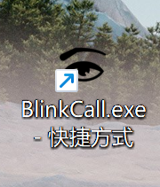
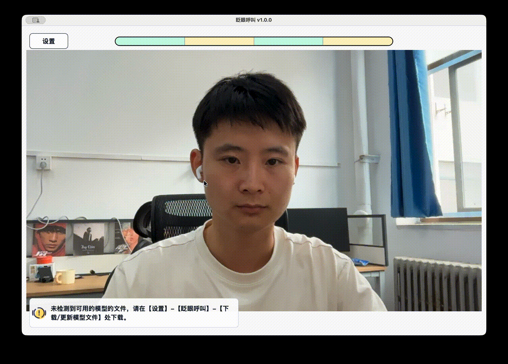
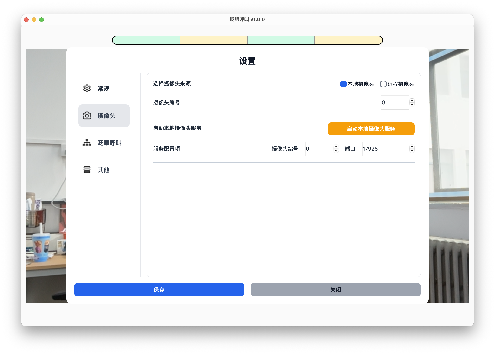

首次使用
本页适合第一次为病人配置软件的家属或照护者阅读。请按顺序完成以下步骤。
下载并解压软件
从下载地址获取最新版本的软件压缩包，并解压到一个固定位置。
建议不要直接在压缩包内运行软件，先完成解压后再打开。
打开软件
进入解压后的软件文件夹，双击 BlinkCall.exe 打开软件。

下载/更新模型文件
第一次使用时，必须先下载模型文件。
操作路径：
设置 -> 眨眼呼叫 -> 下载/更新模型文件。
点击【下载/更新】后等待下载完成。下载完成后，保存设置并返回主界面。

允许摄像头权限
如果系统弹出摄像头权限提示，请允许软件访问摄像头。
如果没有弹窗，可以直接继续下一步。
选择摄像头
默认情况下，软件会使用本地摄像头。
如果电脑连接了多个摄像头，可以在设置中调整摄像头编号。

调整病人与摄像头的位置
双眼需要完整出现在画面中，眼睛不要被遮挡。
完成一次测试呼叫
使用默认眨眼序列进行测试：
睁眼 2 秒 -> 闭眼 2 秒 -> 睁眼 2 秒 -> 闭眼 2 秒。
触发后，软件会播放提醒声音。确认声音正常后，可以点击停止按钮结束提醒。